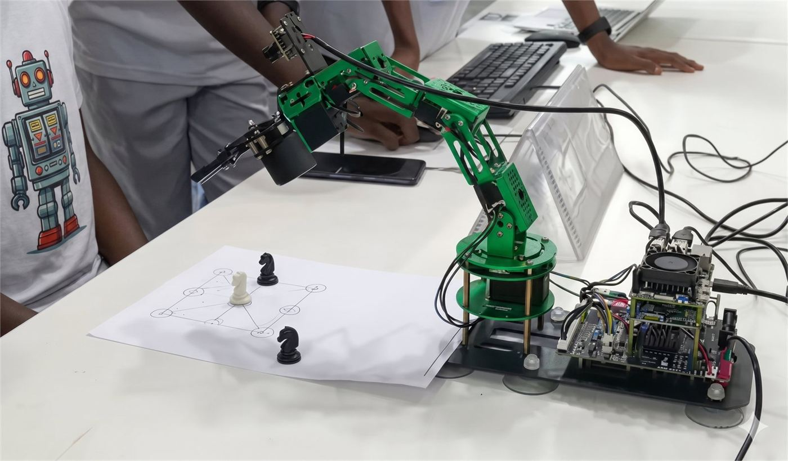
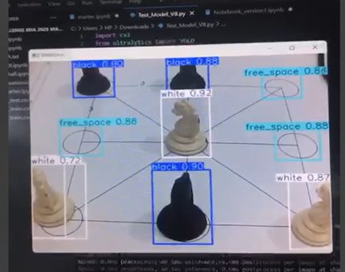
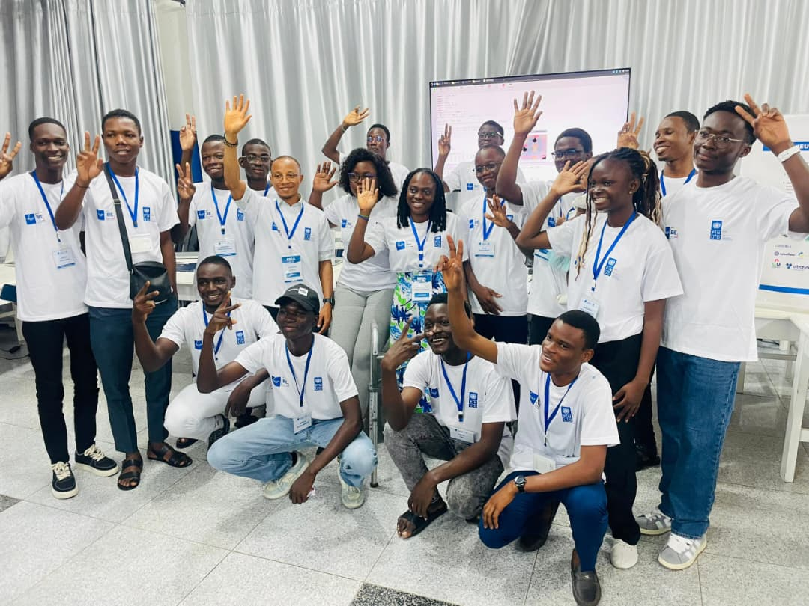

P / 03
Bras robotique -
Tic-Tac-Toe par renforcement
Robotic arm -
Tic-tac-toe by reinforcement learning
Description
Développement d'un agent de Deep Reinforcement Learning (DQN/PPO) pour le contrôle autonome d'un bras robotique jouant au tic-tac-toe, avec détection visuelle de l'état du plateau.
Development of a Deep Reinforcement Learning agent (DQN/PPO) for the autonomous control of a robotic arm playing tic-tac-toe, with vision-based detection of the board state.
C'était le projet de fin de session de l'EEIA 2025, mené par l'équipe de formateurs dont je faisais partie. La chaîne complète tient en trois étapes : une caméra filme le plateau et un modèle YOLO détecte la grille et les pièces ; l'agent d'apprentissage par renforcement choisit le coup à jouer ; le bras robotique exécute ce coup. Toute l'inférence tourne en temps réel sur une Raspberry Pi 5.
It was the closing project of the EEIA 2025 session, led by the team of instructors I was part of. The full pipeline has three steps: a camera films the board and a YOLO model detects the grid and the pieces; the reinforcement learning agent chooses the move; the robotic arm plays it. All inference runs in real time on a Raspberry Pi 5.
DémonstrationDemo
GalerieGallery



Résultats clésKey results
- Agent DQN entraîné - précision 98 % sur partie complète
- Pipeline vision YOLO pour la détection du plateau et des pièces
- Inférence temps réel embarquée sur Raspberry Pi 5
- Trained DQN agent - 98% accuracy on complete games
- YOLO vision pipeline for board and piece detection
- Real-time on-board inference on a Raspberry Pi 5
Technologies
- Python
- PyTorch
- YOLO
- RL (DQN / PPO)
- Raspberry Pi 5